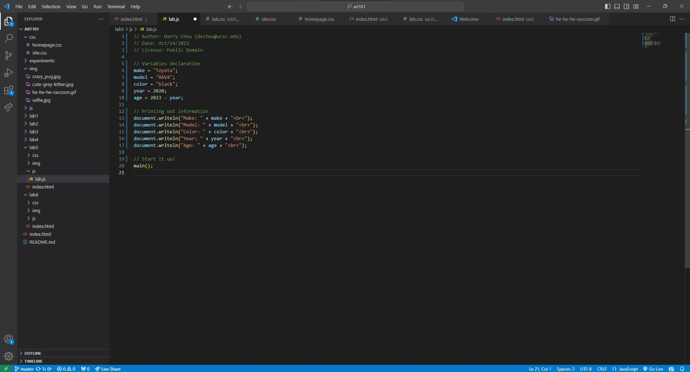

Lab 5 - Data Types and Variables
Challenge
Overall it's pretty smooth and easy, we got every variables in and let the console print them without encountering any challenges.
The only slight challenge is that the car in question is not with Harry at the moment so he'll need some time to find an image of it.
Problems
No significant problems were presented in our work. The only problem we had is to correctly put the image at our desired place (top right),
but this was resolved rather quickly.
Results
The result of our JavaScript file containing Harry's car's information is presented below.